<!DOCTYPE html>
<html lang="cs">
<head>
  <link href='//fonts.googleapis.com/css?family=Source+Sans+Pro:300,400,700,400italic|Dekko|Inconsolata&amp;subset=latin-ext' rel='stylesheet' type='text/css'>

  <link rel="stylesheet" type="text/css" href="https://svedsko.blog/theme/pygments/github.min.css">
  <link rel="stylesheet" type="text/css" href="https://svedsko.blog/theme/font-awesome/css/font-awesome.min.css">

    <link rel="stylesheet" type="text/css" href="https://svedsko.blog/theme/stylesheet/style.min.css?v=4">


    <link rel="shortcut icon" href="https://svedsko.blog/images/favicon.ico" type="image/x-icon">
    <link rel="icon" href="https://svedsko.blog/images/favicon.ico" type="image/x-icon">

  <meta charset="utf-8" />
  <meta http-equiv="X-UA-Compatible" content="IE=edge" />
  <meta name="HandheldFriendly" content="True" />
  <meta name="viewport" content="width=device-width, initial-scale=1.0" />
  <meta name="robots" content="" />

    <!-- Chrome, Firefox OS and Opera -->
    <meta name="theme-color" content="#006AA8">
    <!-- Windows Phone -->
    <meta name="msapplication-navbutton-color" content="#006AA8">
    <!-- iOS Safari -->
    <meta name="apple-mobile-web-app-capable" content="yes">
    <meta name="apple-mobile-web-app-status-bar-style" content="black-translucent">

<meta name="author" content="Knut Holm" />
<meta name="description" content="Před třemi dny jsme se vrátili z dovolené, která původně neměla být pouze náhradním plánem, později se jím však stala a nakonec jsme tento náhradní plán i realizovali. Stále ještě plný dojmů tak píšu tento článek - částečně jako vzpomínku na naprosto úžasné zážitky, ale hlavně se chci podělit o tipy a zkušenosti, které jsme během cesty posbírali. Kdo ví, třeba někoho z vás brzy zavane vítr k nám na sever a budou se vám hodit!" />
<meta name="keywords" content="národní park, příroda, Švédsko, turistika, road trip, cestování, Åre, Pieljekaise, Abisko, Kiruna, polární kruh, sever">
<meta property="og:site_name" content="O Švédsku a tak"/>
<meta property="og:title" content="Road trip po severním Švédsku"/>
<meta property="og:description" content="Před třemi dny jsme se vrátili z dovolené, která původně neměla být pouze náhradním plánem, později se jím však stala a nakonec jsme tento náhradní plán i realizovali. Stále ještě plný dojmů tak píšu tento článek - částečně jako vzpomínku na naprosto úžasné zážitky, ale hlavně se chci podělit o tipy a zkušenosti, které jsme během cesty posbírali. Kdo ví, třeba někoho z vás brzy zavane vítr k nám na sever a budou se vám hodit!"/>
<meta property="og:locale" content="cs_CZ"/>
<meta property="og:url" content="https://svedsko.blog/road-trip-po-severnim-svedsku.html"/>
<meta property="og:type" content="article"/>
<meta property="article:published_time" content="2020-07-21 19:32:00+02:00"/>
<meta property="article:modified_time" content=""/>
<meta property="article:author" content="https://svedsko.blog/author/knut-holm.html">
<meta property="article:section" content="Turistika"/>
<meta property="article:tag" content="národní park"/>
<meta property="article:tag" content="příroda"/>
<meta property="article:tag" content="Švédsko"/>
<meta property="article:tag" content="turistika"/>
<meta property="article:tag" content="road trip"/>
<meta property="article:tag" content="cestování"/>
<meta property="article:tag" content="Åre"/>
<meta property="article:tag" content="Pieljekaise"/>
<meta property="article:tag" content="Abisko"/>
<meta property="article:tag" content="Kiruna"/>
<meta property="article:tag" content="polární kruh"/>
<meta property="article:tag" content="sever"/>
<meta property="og:image" content="https://svedsko.blog/images/og.png">

  <title>O Švédsku a tak &ndash; Road trip po severním Švédsku</title>

</head>
<body>
  <aside>
    <div>
      <a href="https://svedsko.blog">
        
      </a>
      <h1><a href="https://svedsko.blog">O Švédsku a tak</a></h1>

<p>Knut Holm</p>
      <nav>
        <ul class="list">
          <li><a href="https://svedsko.blog/pages/o-mne.html#o-mne">O mně</a></li>
          <li><a href="https://svedsko.blog/pages/proc-svedsko.html#proc-svedsko">Proč Švédsko</a></li>

        </ul>
      </nav>

      <ul class="social">
        <li><a class="sc-linkedin" href="https://www.linkedin.com/in/knuhol" target="_blank"><i class="fa fa-linkedin"></i></a></li>
        <li><a class="sc-github" href="https://github.com/knuhol" target="_blank"><i class="fa fa-github"></i></a></li>
        <li><a class="sc-stack-overflow" href="https://stackoverflow.com/users/3780766" target="_blank"><i class="fa fa-stack-overflow"></i></a></li>
      </ul>
    </div>


  </aside>
  <main>

    <nav>
      <a href="https://svedsko.blog">Domů</a>

      <a href="/archives.html">Archiv</a>
      <a href="/categories.html">Kategorie</a>
      <a href="/tags.html">Tagy</a>
      <a href="/authors.html">Autoři</a>


    </nav>

<article class="single">
  <header>
    <h1 id="road-trip-po-severnim-svedsku">Road trip po severním Švédsku</h1>
    <p>
      Publikováno 21. 7. 2020 (19:32) v kategorii <a href="https://svedsko.blog/category/turistika.html">Turistika</a>

        &#8226; Autor <a href="https://svedsko.blog/author/knut-holm.html">Knut Holm</a>

        &#8226; Přečtete za 17 minut
    </p>
  </header>


  <div>
    <p>Před třemi dny jsme se vrátili z dovolené, která původně neměla být pouze náhradním plánem, později se jím však stala a nakonec jsme tento náhradní plán i realizovali. Stále ještě plný dojmů tak píšu tento článek - částečně jako vzpomínku na naprosto úžasné zážitky, ale hlavně se chci podělit o tipy a zkušenosti, které jsme během cesty posbírali. Kdo ví, třeba někoho z vás brzy zavane vítr k nám na sever a budou se vám hodit!</p>
<h2>Recept na zcela neplánovanou dovolenou</h2>
<p>Jak už to tak bývá, člověk většinou začíná plánovat příští dovolenou ihned poté, co se vrátí z té poslední - nejinak tomu bylo i v tomto případě. Nápad podniknout road trip po Švédsku se zrodil, když jsem se loni vrátili z Irska. Letos na začátku února jsme si ovšem zašli na sushi do naší oblíbené restaurace, na zdi visely krásné obrázky z Japonska, slovo dalo slovo a za týden jsme koupili letenky do <em>Tokya</em>.<br>
Jak již asi správně tušíte, bylo to pouze pár týdnů předtím, než celý svět definitivně zachvátilo corona šílenství a s blížícím se termínem odletu bylo stále jasnější, že do Japonska letos neodletíme. Začali jsme tedy oživovat náš nápad na cestu po Švédsku, ovšem po mnoha zkušenostech se zrušenými plány jsme nechtěli vytvořit jen další v řadě, který se opět rozplyne jako pára nad hrncem. Vznikl plán dovolené, který vlastně žádným plánem nebyl - prakticky do poslední chvíle jsme totiž nevěděli, jestli vůbec někam pojedeme - a pokud ano, tak kdy přesně a na jak dlouho. A tak jsme si v době, která plánům nepřeje, stanovili budget, flexibilní termín a připravili jsme se na to, že připravovat se nelze.</p>
<p>Cestu jsme několikrát úplně odpískali, aby záhy zase svitla naděje, že ji bude možné podniknout. Když nakonec bylo jasné, že budeme opravdu moci do týdne vyrazit, dali jsme dohromady velmi zevrubný plán cesty, den předem jsme zarezervovali ubytování na první noc, sbalili se a ráno vyrazili. Tento koncept se nakonec ukázal být natolik úspěšným, že jsme jej praktikovali po celý zbytek dovolené - byl totiž zcela flexibilní, což je patrně to nejlepší slovo definující způsob, jakým úspěšně přežít rok 2020.</p>
<p>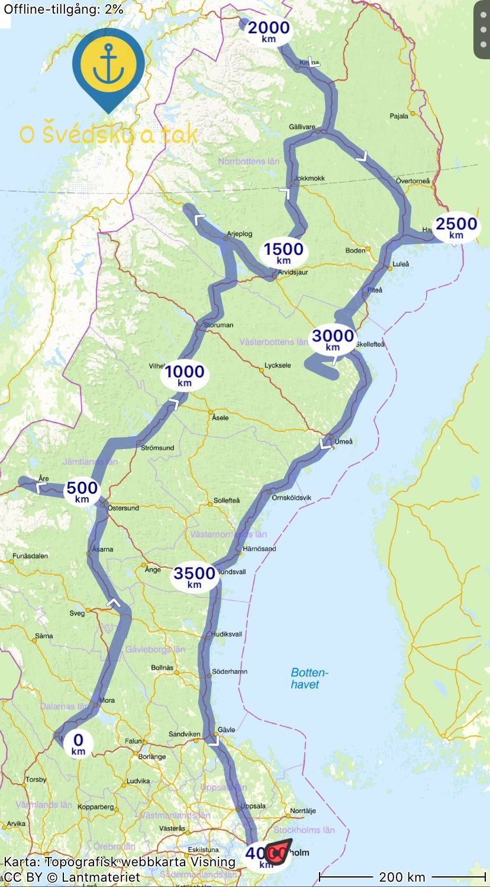
<em>Podle auta jsme celkem najeli 4746 km a přes dalších 100 km jsme ušli pěšky - první část trasy bohužel na mapě chybí, protože jsem záznam polohy zapnul až ve Vansbro</em></p>
<p>V tomto článku chci popsat itinerář naší cesty, podělit se o zážitky a vypíchnout nějaké tipy na body zájmu. Cestu by mělo být možné úplně zopakovat nebo provést celou řadu změn tak, aby vyhovovala přímo vám.<br>
V plánu mám napsat ještě jeden článek, který bude zaměřen na obecné tipy jak na road trip a co si vzít s sebou.</p>
<h2>Cesta na sever a zpátky</h2>
<h3>Vansbro</h3>
<p>Z našeho domova na ostrově <em>Tynningö</em> vyrážíme v pátek 3. července přívozem v šest ráno a naším cílem je město <em>Vansbro</em>. Ze <em>Stockholmu</em> se vydáváme na severozápad po silnici <strong>E18</strong>, v <em>Enköpingu</em> sjíždíme na cestu <strong>E16</strong> a po zhruba čtyřech hodinách jízdy s malými přestávkami se dostáváme ke staré nepoužívané železnici mezi městy <em>Vansbro</em> a <em>Mora</em> v kraji <em>Dalarna</em>, jejíž část hodláme zdolat na zapůjčené drezíně. Tu jsme si zarezervovali den předem u <a href="https://www.vansbroaventyr.se/cykla-dressin-i-dalarna/">Vansbroäventyr AB</a>.</p>
<p>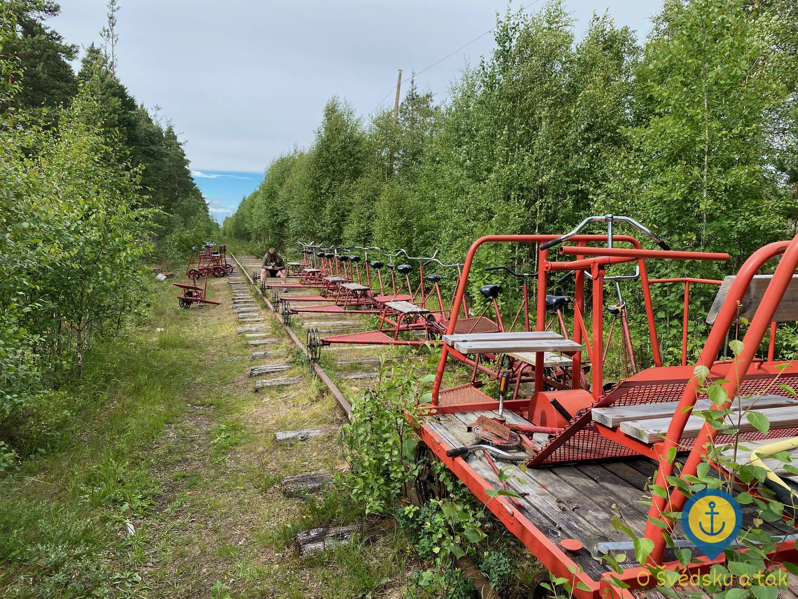
<em>Zaparkované drezíny na začátku trasy</em></p>
<p>Za cenu <strong>500</strong> SEK se nám dostává parádního zážitku na celý den - na drezíně se nám povedlo zdolat zhruba 60 km. Jízda je velmi jednoduchá a mnohem méně namáhává než jízda na kole. Zprvu na tandemové drezíně šlapeme společně, rychle ale přicházíme na to, že druhý pár nohou tolik parády navíc nedělá a je lepší se střídat. Zhruba po třech hodinách jízdy drezínu shazujeme z kolejí, otočíme a vracíme se zpět po stejné trase.</p>
<p>Drezínu je třeba vyhodit z dráhy i v případě, že potkáte někoho v protisměru nebo když chcete někoho předjet - nestává se to často a drezínu v pohodě unesou dva dospělí lidé, navíc posádka druhé drezíny s tímto úkonem často ochotně pomůže.<br>
Zajímavostí je, že kromě turistů využívají starou trať i místní, kteří parkují své drezíny u chatek a hojně je využívají například k nákupům.</p>
<p>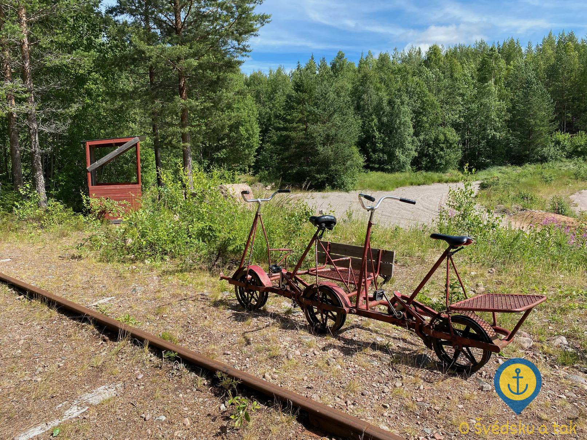
<em>Tandemová drezína vedle dráhy</em></p>
<p>Oběd vaříme v lesíku u trati na plynovém vařiči a noc trávíme v chatce v nedalekém campu <a href="http://www.yttermalungscamping.nl/">Yttermalungs Camping</a> za <strong>725 SEK</strong>.</p>
<h3>Åre</h3>
<p>V sobotu ráno najíždíme na silnici <strong>E45</strong>, která se později stává ikonou celé této dovolené. V motorestu <a href="https://hogdalsbygden.se/petterssons-kiosk-bar-hb/">Petterssons Kiosk &amp; Bar HB</a> obědváme perfektní řízek, v <em>Östersundu</em> kupujeme ledničku do auta a poté odbočujeme na silnici <strong>E14</strong>, protože se chceme zastavit v <em>Åre</em>.</p>
<p>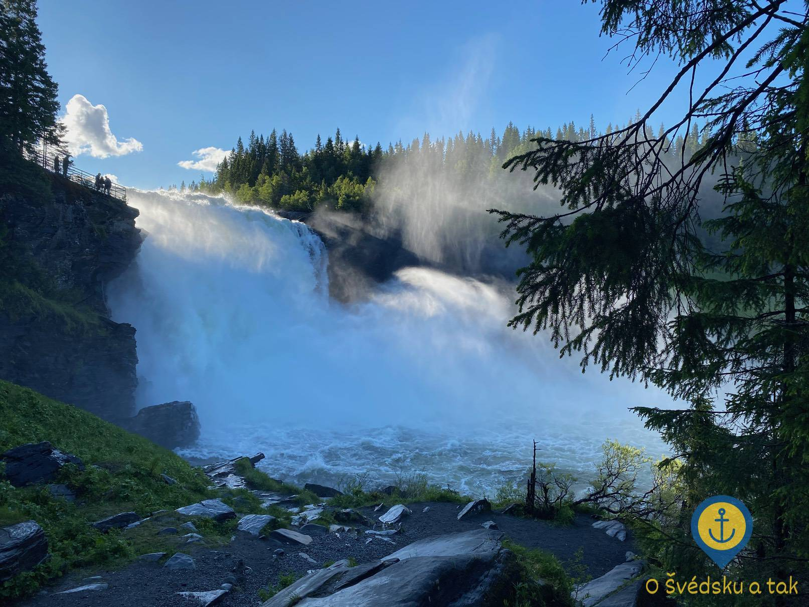
<em>Vodopád Tännforsen</em></p>
<p>K tomuto městu nás přitahuje především největší švédský vodopád <a href="https://www.lansstyrelsen.se/jamtland/besoksmal/naturreservat/tannforsen.html">Tännforsen</a>, který navštěvujeme ještě ten stejný den večer. Na epický zážitek, který umocňujeme uvařením večeře pod vodopádem, dlouho nezapomenu.</p>
<p>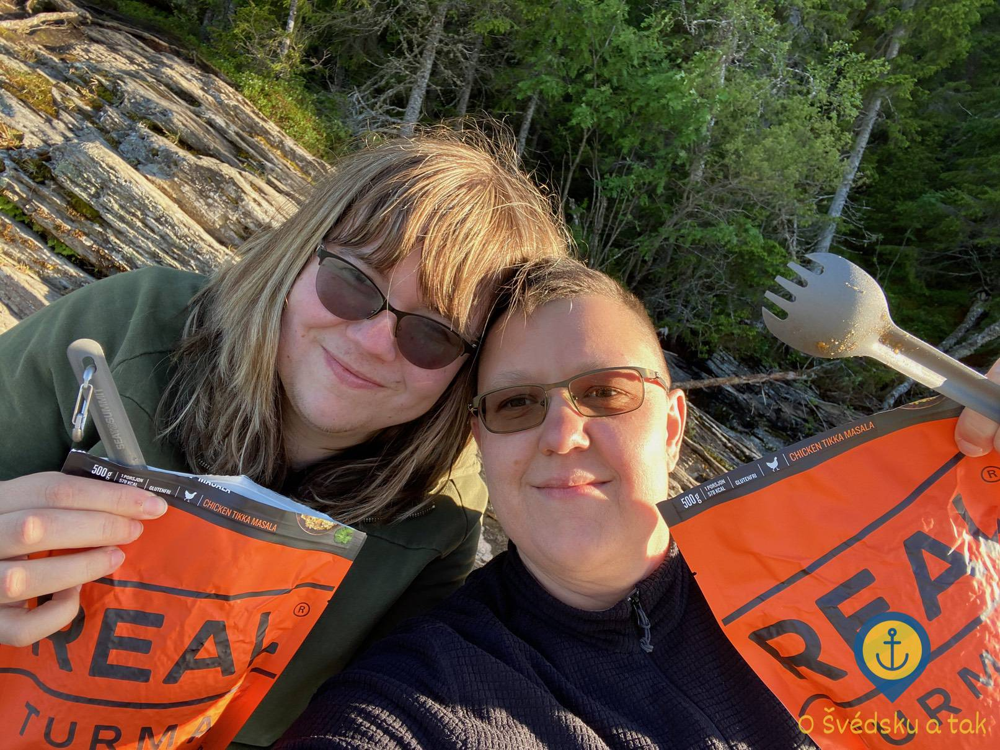
<em>Večeře pod vodopádem Tännforsen</em></p>
<p>Po cestě na hotel <a href="https://www.arefjallsatra.com/">Åre Fjällsätra</a> se stavujeme ještě u památníku <a href="https://www.1718.no/duveds-skans-och-karolinermonument/">Karolinermonumentet</a> v <em>Duvedu</em>, kde skončil tzv. <a href="https://www.sverige.cz/karolinsky-pochod-smrti/">Karolinský pochod smrti</a>.</p>
<p>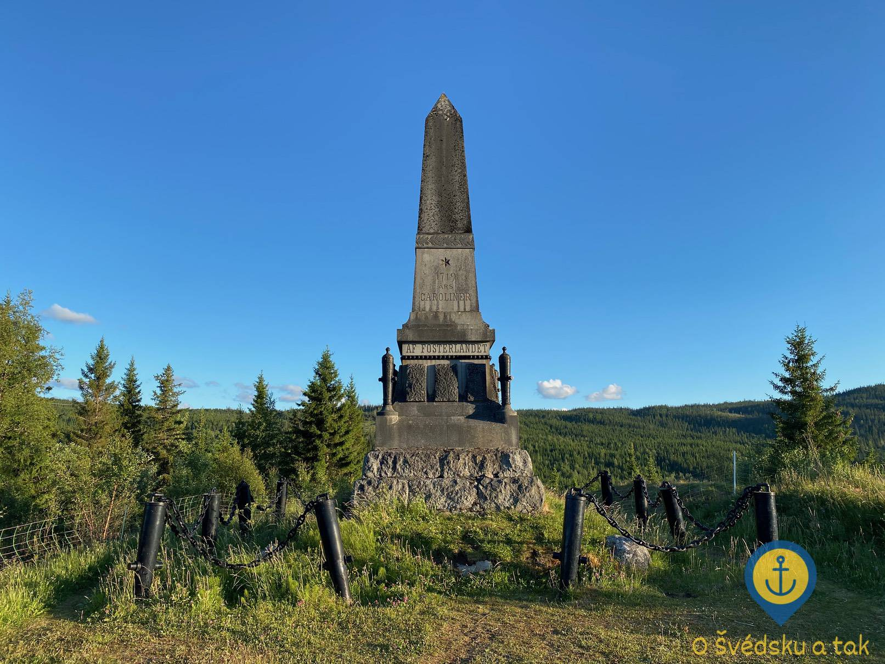
<em>Památník Karolinermonumentet</em></p>
<p>Druhý den v <em>Åre</em> zůstáváme, protože chceme navštívit horu <a href="https://aresweden.com/wp-content/uploads/2020/06/Are_vandringskarta_2020_1.1_web.pdf">Åreskutan</a>, jejíž lyžařská střediska platí v zimě za ta nejvíce navštěvovaná v celém Švédsku. Protože je to první túra celé dovolené, chceme ji pojmout zlehka a pomoci si nahoru lanovkou <strong>VM8:an (Å22)</strong> - cesta pro dva stojí <strong>180 SEK</strong>, dolů lze jet zcela zdarma. Ze <em>Svartberget</em> chceme pokračovat až na vrchol <em>Åreskutan</em>, ale počasí nám nepřeje a výstup je zakázaný.</p>
<p>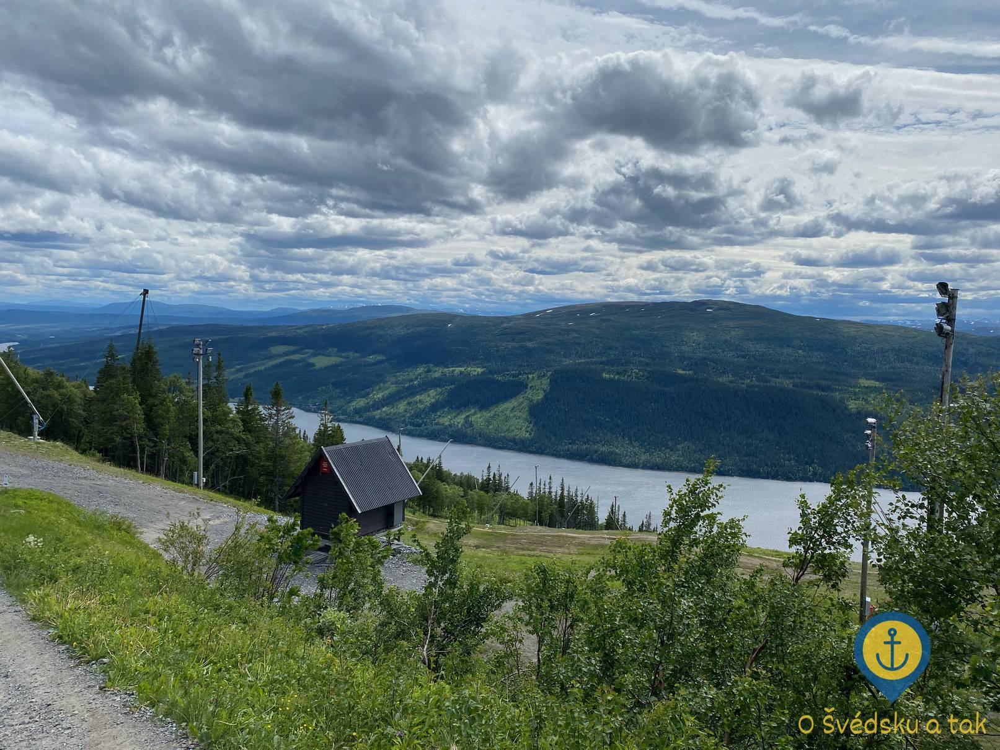
<em>Výhled z hory Svartberget na Åre</em></p>
<p>Dáváme si tak aspoň pivo ve švédském nejvýše položeném pivovaru <a href="https://www.svartberget.se/">Svartbergets Fjällbryggeri</a> a vydáváme se dolů po svých stezkami <strong>211</strong> a <strong>212</strong>. Po cestě se dozvídáme, že šlapeme ve stopách historie, protože část stezky <strong>211</strong> vede po <a href="https://my.viewranger.com/route/details/NTIzNDk=">Stjärnvägen</a> - nejstarší značen stezce v <em>Åre</em> z roku 1878.</p>
<p>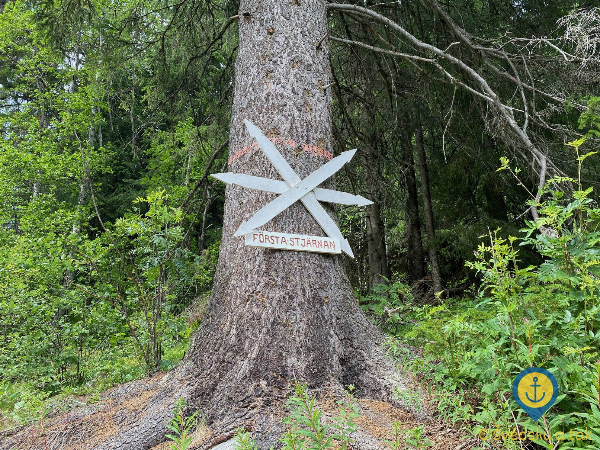
<em>Staré značení na stezce Stjärnvägen - první hvězda, po cestě jsou tři</em></p>
<p>Den zakončujeme v hospůdce <a href="http://www.parkvillan.se/">Parkvillan</a>, kam se stavujeme na tzv. <em>after hike</em> - oblíbený švédský koncept, pivo a jídlo po túře.</p>
<p>Noc trávíme ve stejném hotelu jako tu předchozí, pobyt nás stojí dohromady <strong>1603 SEK</strong>.</p>
<p>V pondělí se probouzíme do hodně upršeného počasí, ale protože máme z předešlého večera zarezervovanou prohlídku v dole <a href="http://www.froagruva.se/">Fröå gruva</a>, nechceme ji rušit a dobře děláme - dostává se nám perfektního zážitku s místopisu znalou průvodkyní, která velmi ochotně mluví pomaleji a zřetelně, takže si výklad ve švédštině i prohlídku samotnou naplno užíváme.</p>
<p>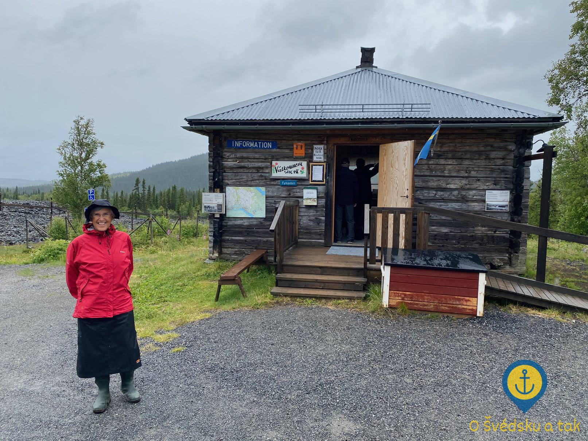
<em>Naše průvodkyně vedle recepce dolu Fröå gruva</em></p>
<p>Po cestě z dolu se chceme stavit ještě v <a href="https://arechokladfabrik.se/">Åre Chokladfabrik</a>, ale odrazuje nás dlouhá fronta před prodejnou čokoládovny. Nakupujeme tak jen klobásy v <a href="https://undersakers.se/">Undersåkers Charkuteriefabrik</a> a hurá na sever!</p>
<h3>Slagnäs</h3>
<p>Když se v pondělí odpoledne vracíme na silnici <strong>E45</strong>, nepřestává pršet a ani předpověď počasí na další den nevypadá zrovna příznivě. Nic naplat, pryč z upršeného <em>Jämtlandu</em>, jedeme přes kraj <em>Västerbotten</em> až hodně na sever do kraje <em>Norrbotten</em>. </p>
<p>Silný déšť nás doprovází celý cestovní den, takže nás moc nelákají ani různé poutače u cesty, které by jinak nabízely slibné zastávky. Města po cestě jsou menší a divočejší, na náměstích se obvykle nacházejí jen malé obchůdky s loveckým vybavením a náboji. Po cestě se stavujeme ve městě <em>Strömsund</em> ve sportu, protože si chce Terka koupit novou láhev na vodu. Ihned po vstupu do obchodu zjišťujeme, že se začínáme nacházet v krajích, které jsou naše krevní skupina - vybavení pro fitka a městské sporty je pouze okrajovým sortimentem, zato je obchod nabitý vybavením do divočiny. Hurá! První z mnoha nákupů kvalitního a levného outdoorového vybavení a první pochyby, jestli je pro nás <em>Stockholm</em> opravdu tím ideálním městem k životu :-)</p>
<p>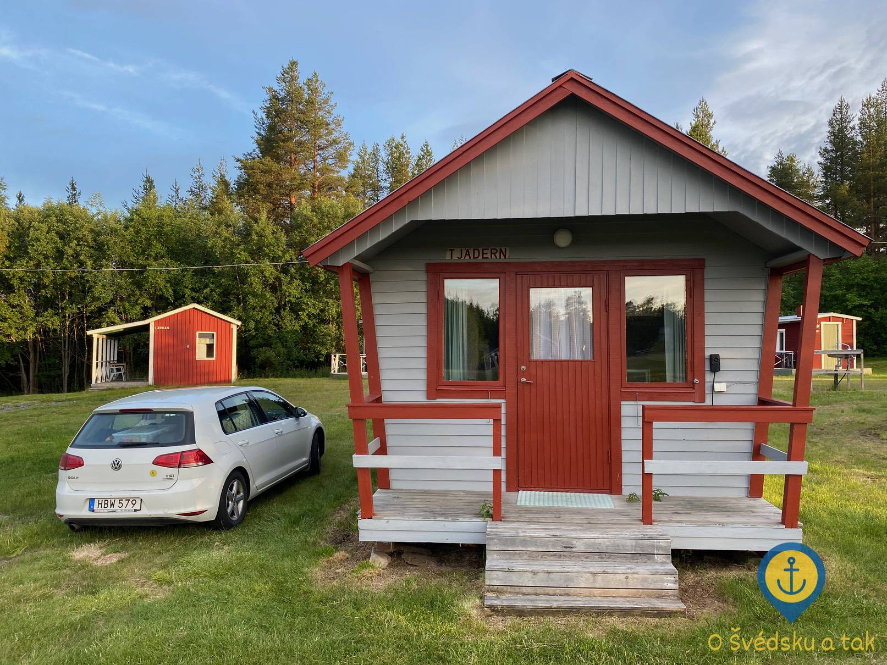
<em>Slagnäs Camping, naše auto a chatka</em></p>
<p>Oběd vaříme na vařiči v zastávkové budce někde u cesty, protože pořád silně prší. Déšť ustává až chvíli před hranicí <em>Norrbottenu</em>, řídí Terka a já ochutnávám severská piva. Pozdě večer dorážíme do naší chatky v <a href="https://www.slagnascamping.com/">Slagnäs Camping</a> kousek od <em>Arjeplogu</em>, kde na nás počkal velice ochotný recepční. Noc nás stojí <strong>300 SEK</strong>.</p>
<h3>Pieljekaise</h3>
<p>Jsme v ráji, program na následujících pár dní je divočina. Míst na pořádnou túru se nabízí opravdu hodně, nakonec si vybíráme národní park <a href="http://www.sverigesnationalparker.se/park/pieljekaise-nationalpark/">Pieljekaise</a> a vydáváme se po cestě <strong>95</strong> do města <em>Jäckvik</em>.</p>
<p>Toto úterý se vryje do naší pamětí jako den mnohých „poprvé“ - a hned zrána nastává náš první sobí den. Řídím teprve asi půl hodiny, když mi po silnici přeběhne první stádo sobů. Dál jedu opravdu hodně opatrně, protože sobů potkáváme ten den po cestě ještě dalších zhruba dvacet v menších skupinkách. Většina z nich se líně prochází po silnici a projíždějících aut se vůbec nebojí, takže se kolem nich plazíme na dvojku. Ze začátku je z toho ohromný zážitek, potom už jen opruz pro toho, kdo zrovna sedí za volantem. Potkáváme i jednoho losa, který se nás ovšem bojí mnohem více než sobi a uhání pryč.</p>
<p>Po asi hodině a půl jízdy stojíme u vstupu do národního parku <em>Pieljekaise</em> - totiž, ne tak docela, park se nachází v okolí samotné hory a na jeho hranici musíme kousek pěšky po ikonické stezce <a href="https://www.svenskaturistforeningen.se/guider-tips/omraden/kungsleden/">Kungsleden</a>, která začíná v <em>Abisku</em>, je dlouhá 400 km a tudy prochází.</p>
<p>Na informační ceduli u parkoviště zjišťujeme, že jestli chceme přespat v horské boudě <em>Pieljekaisestugan</em>, potřebujeme klíč od ložnice, který si lze vyzvednout v obchodě v <em>Jäckviku</em>. Žádné další informace o obchodě cedule nenabízí, takže nasedáme znovu do auta a vydáváme se hledat obchod s klíčem. Po prvním neúspěšném pokusu, kdy nás navigace zavede do kostela, objevujeme po cestě supermarket ICA a rozhodneme se tam zeptat, kde se onen tajemný obchod s klíčem nachází. Usměvavý chlapík nám oznamuje, že obchod nedávno zbourali a na jeho místě postavili tento supermarket - a klíč nám ochotně za <strong>300 SEK</strong> na noc půjčuje on sám.</p>
<p>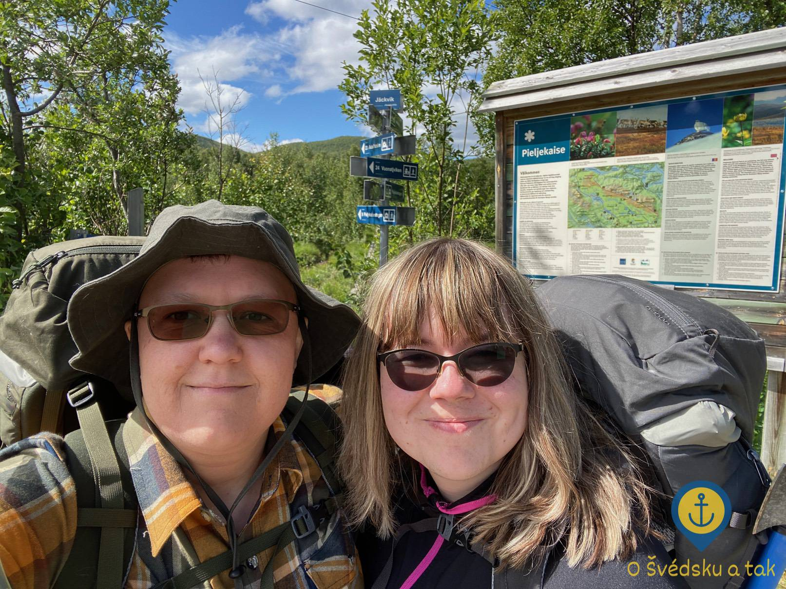
<em>U vstupu do národního parku Pieljekaise</em></p>
<p>Vybaveni klíčem se vracíme na parkoviště a začínáme si připravovat batohy a vybavení na túru. Vtipkujeme na téma medvědi, jsme nabití očekáváním a zároveň i trochu nervózní, přeci jen takhle vysoko na severu budeme sami v divočině poprvé. Terka prohlásila památnou větu: „Jestli se tohle povede, budeme fakt hustý!“<br>
Podle mapy je to k chatě jenom 9 km, takže očekáváme pohodovou cestu a příjemný večer v horské boudě - jsme zvyklí chodit dlouhé trasy přes 20 km, ale kolem <em>Stockholmu</em>, kde je terén víceméně placatý. Záhy se ale ukázalo, že jsme výrazně podcenili výškový profil trasy a čeká nás pořádný výšlap. Jakmile se ale tundra přehoupne pod obzor, jsme odměnění královským výhledem a úžasným pocitem úspěchu - náš první opravdový <em>fjällvandring</em>!</p>
<p>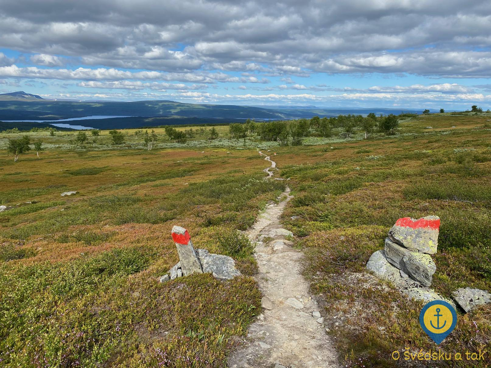
<em>Pohled z úpatí hory Pieljekaise</em></p>
<p>
<em>Já při přecházení úpatí hory Pieljekaise</em></p>
<p>Do chaty dorážíme pozdě odpoledne a poměrně vyčerpaní, takže pohled na postele v uzamčené ložnici nás příjemně překvapuje. Postele mají matrace a lůžkoviny, my jsme ale čekali jen dřevěné pryčny, takže jsme vybaveni spacáky a karimatkami. Nevadí, budeme vědět pro příště. V ne-corona roce se v chatě běžně vyspí klidně i deset lidí normálně na zemi, klíče ani poplatku netřeba.
Venku je devět stupňů, takže si na noc trochu topíme v kamnech, dáváme pár partiček v kartách a usínáme jako mimina s myšlenkou, že spíme zhruba jen 20 km jižně vzdušnou čarou od polárního kruhu.</p>
<p>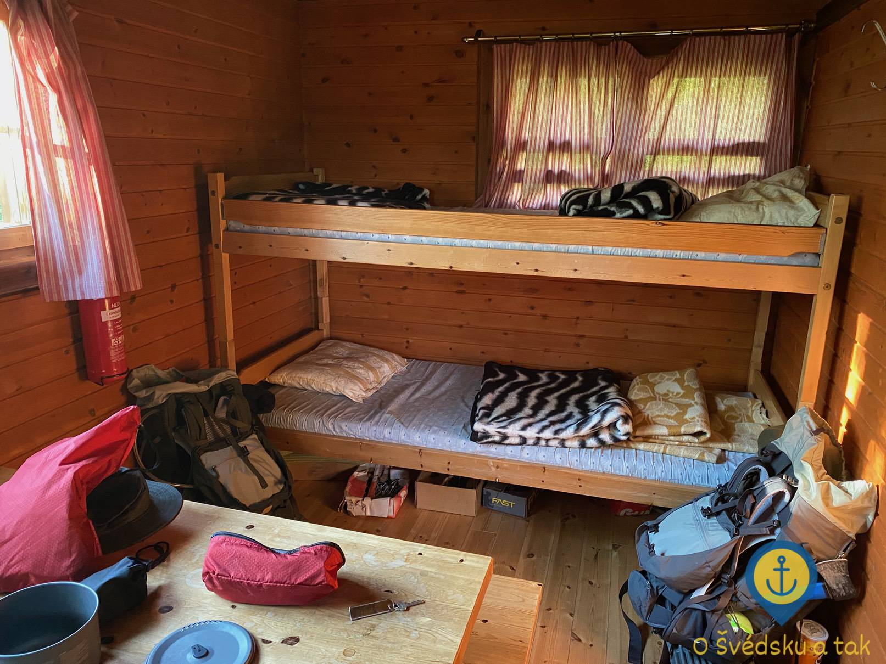
<em>Pieljekaisestugan</em></p>
<p>Druhý den po snídani v horské boudě se vydáváme stejnou cestou zpět na parkoviště. Sestup je znatelně méně náročný, ale i tak se nakonec rozhodujeme, že celý den se nám po takové túře řídit nechce, a to ani přestože se to „povedlo a jsme fakt hustý“. Měníme cíl pro dnešní den z <em>Kiruny</em> na <em>Jokkmokk</em>, nasedáme do auta a vydáváme se opět na cestu.</p>
<h3>Jokkmokk</h3>
<p>Ve městě <em>Arjeplog</em> se vracíme na starou známou silnici <strong>E45</strong> a dostáváme pořádný hlad. Ještě neznalí místních poměrů jsme neskonale vděční, když objevujeme pobočku fastfoodového řetězce <a href="https://frasses.se/">Frasses</a>, původně založeného speciálně pro kraj <em>Norrbotten</em>, kde se údajně dodnes těší nejvyšší popularitě. Tato restaurace je jediná otevřená restaurace v okolí široko daleko a před její návštěvou tak k ní díky tomu upínáme naši veškerou naději. Ovšem, po našem prvním zážitku s tímto řetězcem se rozhodujeme, že se mu budeme pečlivě po celý zbytek dovolené vyhýbat - <em>McDonald's</em> je totiž oproti <em>Frasses</em> snad restaurace s michelinskou stár.</p>
<p><em>Jokkmokk</em> se ukazuje být městem s nejdražším ubytováním na celé naší cestě. Po hodině hledání vhodného místa k přenocování si tak vytipujeme camp, kam přijíždíme naslepo a plníme si další cestovatelský sen: „Máte volnou chatku? Berem!“<br>
Čtyřhvězdičkový camp <a href="https://arcticcampjokkmokk.se/">Arctic Camp Jokkmokk</a> se nachází asi dvacet kilometrů severně nad polárním kruhem a svůj první polární den v životě trávíme v luxusní chatce za <strong>1059 SEK</strong> na noc. Camp navíc disponuje pračkou, takže neváháme a pereme oblečení, které se již nachází v zoufalém stavu směsice špíny, potu a repelentu. Zatímco se pere prádlo, relaxujeme v sauně, která je pro ubytované hosty k dispozici zdarma. Po dvou náročných dnech v horách - nebesa!</p>
<p>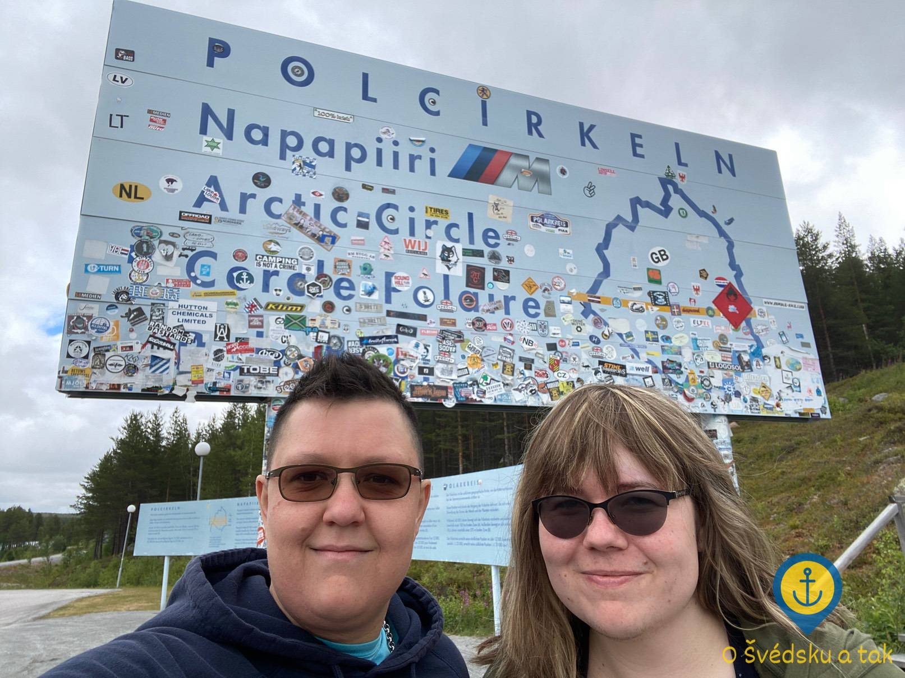
<em>Tudy prochází polární kruh</em></p>
<p>Druhý den jedem autem kousek zpátky na hranici polárního kruhu na odpočívadlo <a href="https://goo.gl/maps/wRKkFPDxrfMopk1K9">Rastplats Polcirkeln</a>, kde už byla večer předtím, kdy jsme tímto místem projížděli poprvé, zavřená kavárna s upomínkovými předměty. Na místě si necháváme vystavit upomínkový certifikát s datem překročení polárního kruhu a vydáváme se zpět do <em>Jokkmokku</em> navštívit muzeum sámské kultury <a href="http://www.ajtte.com/">Ájtte</a>.</p>
<p>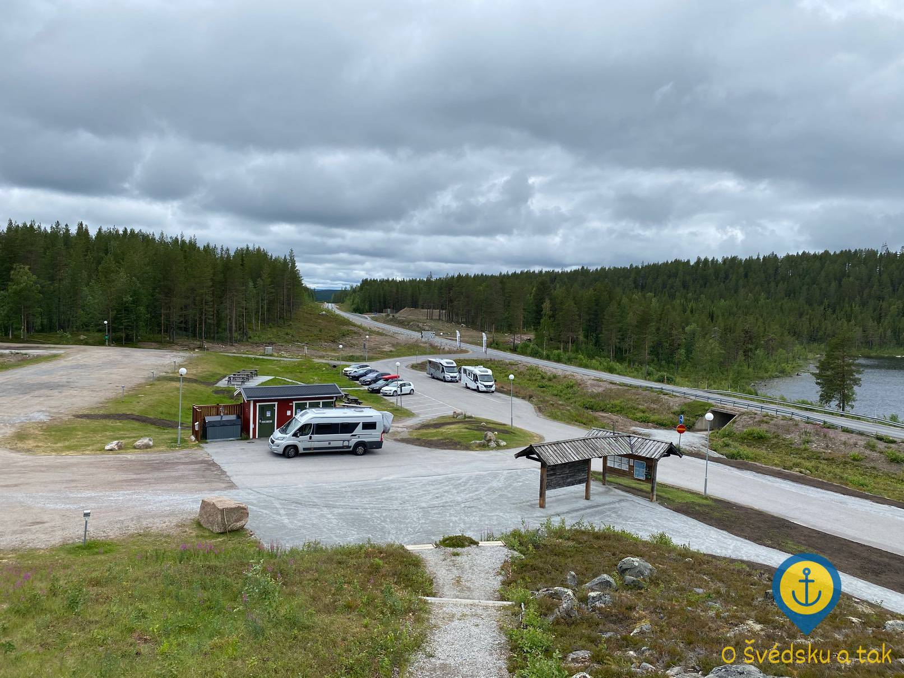
<em>Odpočívadlo u polárního kruhu</em></p>
<p>Vstupné nás stojí <strong>180 SEK</strong> a v muzeu se zasekáváme na několik hodin, protože je opravdu špičkově zpracované. Mimo jiné se dozvídáme, že úhledné malé bobky, které už několik dní nacházíme úplně všude v okolních lesích, patří losovi.</p>
<p>
<em>Socha losa v muzeu Ájtte</em></p>
<p>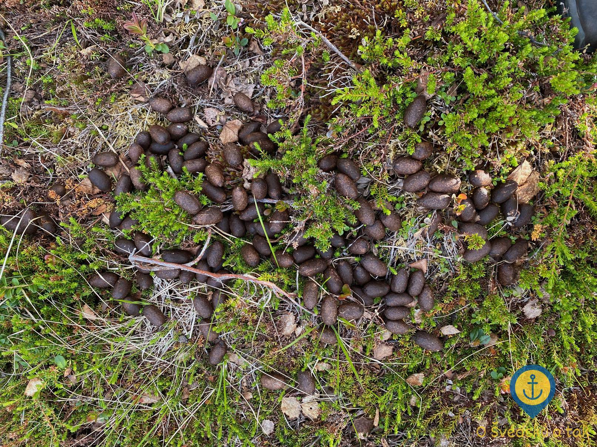
<em>Losí bobky</em></p>
<p>Pak si dáváme ještě rychlý oběd v restauraci <a href="https://www.facebook.com/Restaurang-Galamair-Jokkmokk-1461073607538829/">Ga La Mair</a> a hurá do <em>Kiruny</em>! Já chci po cestě ještě do národního parku <a href="https://www.sverigesnationalparker.se/park/muddus--muttos-nationalpark/">Muddus</a>, ale Terka je nekompromisní - šetříme síly na Abisko. </p>
<h3>Kiruna</h3>
<p>Pokračujeme po silnici <strong>E45</strong> dál na sever, kousek za městem <em>Skaulo</em> si děláme krátkou odbočku na lesní odpočívadlo u jezera <em>Marsijärvi</em> a vaříme kafe v nové konvičce, kterou jsme si koupili v <em>Jokkmokku</em>.<br>
Do <em>Kiruny</em> přijíždíme ve čtvrtek večer a první noc trávíme v soukromém ubytování <a href="https://www.booking.com/hotel/se/the-northern-light-house.sv.html">The Northern Light House</a> v <em>Jukkasjärvi</em> za <strong>607 SEK</strong>, co by kamenem dohodil od slavného <a href="https://www.icehotel.com/">Icehotelu</a>. </p>
<p>Kiruna a vlastně celý <em>Lapland</em> ožívají hlavně v zimě, kdy nastává období pozorování polárních září a tedy hlavní sezóna. V létě je v celém regionu spíše mrtvo a v corona roce je to obzvláště patrné - my jsme v Kiruně byli už letos v lednu, kdy jsme si vystříleli všechna hlavní lákadla, a ta ostatní jsou kvůli coroně zavřená nebo nedostupná (pozn. v době naší dovolené nebylo možné překročit hranice do Norska ani do Finska kvůli tamějším opatřením). My jsme zde ale hlavně kvůli divočině, takže nesmutníme - plánujeme túry a další dvě noci v <em>Kiruně</em>.</p>
<p>Je pátek a půlí se nám dovolená. K tomu navíc znovu šíleně lije, a z obou důvodů nakonec volíme odpočinkový program. Dopoledne trávíme couráním po Kiruně, nákupy turistických cetek a dalšího outdoorového vybavení, na oběd se stavujeme do restaurace <a href="https://www.arcticthaigrill.com/">Arctic Thai &amp; Grill</a>. </p>
<p>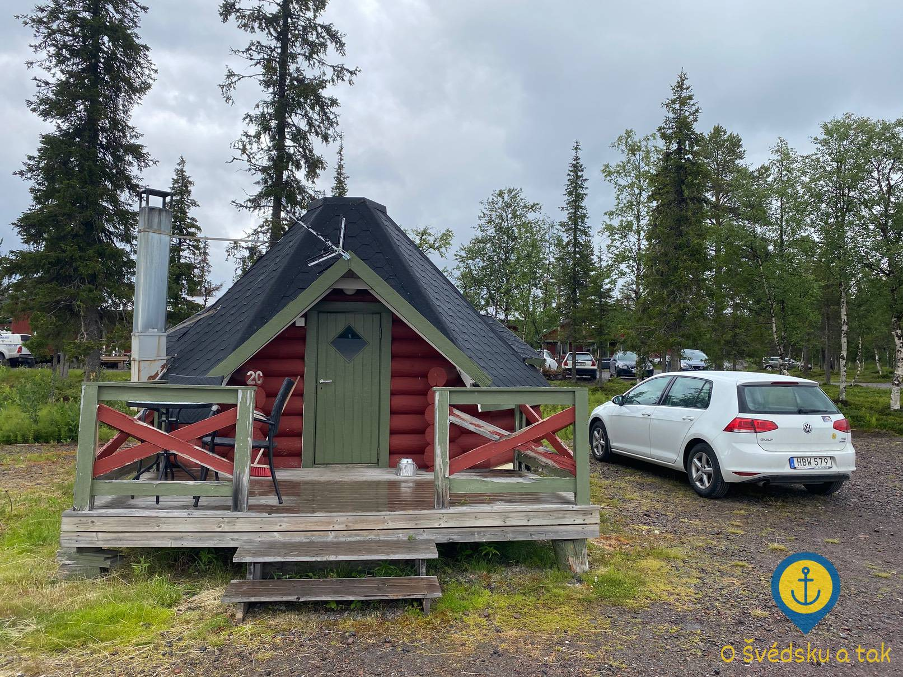
<em>Chatka v campu Alta a naše auto</em></p>
<p>Odpoledne se na dvě noci ubytováváme v chatce v <a href="http://www.campalta.se/">Camp Alta</a> za <strong>1000 SEK</strong>. Bez nadsázky musím říct, že jsem z tohoto campu totálně nadšený a že je to nejlepší camp, v jakém jsem se kdy ubytoval. Chatička je velmi útulná a pohodlná, kromě toho ale navíc camp disponuje velkou společenskou místností s otevřeným ohništěm uprostřed, kolem kterého stojí lavičky pokryté sobími kožešinami. Místo jako stvořené pro setkávání lidí - a navíc je pátek, hodně lidí se staví na pokec a na pivo.</p>
<p>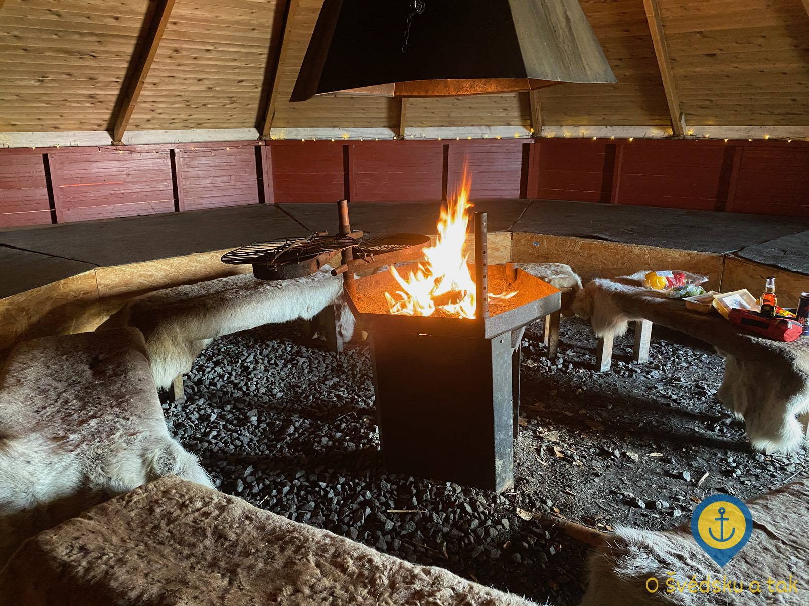
<em>Společenská místnost v campu Alta</em></p>
<p>Rozhovory u ohně plynou a postupně zjišťujeme, že v <em>Kiruně</em> je snad polovina <em>Stockholmu</em> - kromě toho píšou i naši sousedé z <em>Tynningö</em>, že jsou právě v <em>Abisku</em>!<br>
Po večeři se přesouváme do soukromé sauny, která je v ceně campu, jen se musí zarezervovat. Po sauně se dá zchladit v nedalekém jezeře a do postele nás vyhání akorát plánovaný výlet v <em>Abisku</em>, protože noční tmu jsme už pár dní neviděli a ještě pár dní neuvidíme. Akorát ta potvora půlnoční slunce je celou dobu našeho pobytu za polárním kruhem schovaná za mraky.</p>
<p>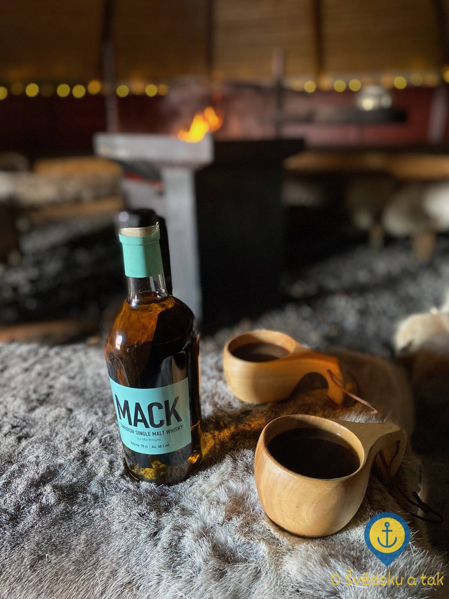
<em>Páteční večer s kávou a whisky Mackmyra</em></p>
<p>V sobotu po snídani vyrážíme do národního parku <a href="https://www.vansbroaventyr.se/cykla-dressin-i-dalarna/">Abisko</a> a celou cestu lije jako z konve. Jakmile ale přijíždíme na místo, stává se zázrak - po celý zbytek dne nespadla už ani kapka a dokonce vylezlo sluníčko! Balíme batohy a vydáváme se do informačního centra <em>Naturum</em> pro potřebné informace.</p>
<p>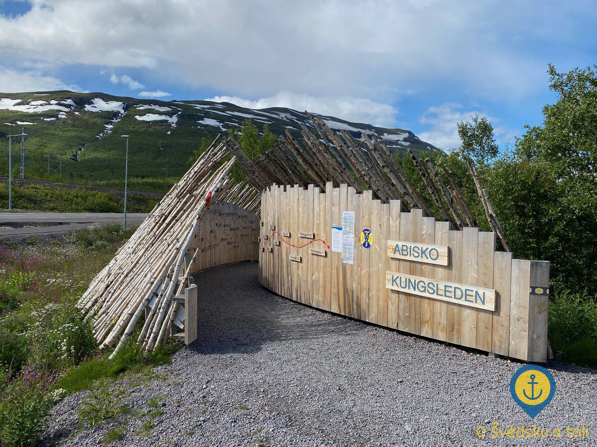
<em>Začátek Kungsleden</em></p>
<p>Kolem proudí davy turistů, někteří vybavení na dlouhý pochod na <em>Kungsleden</em>, většina je ovšem jen v městském oblečení zcela nevhodném pro pobyt v přírodě. No jo, corona rok, všichni tito lidi by teď normálně byli někde v Thajsku u moře.<br>
Paní na informacích má očividně <em>Abisko</em> hodně prochozené a umí dobře poradit, nicméně vlivem přílivu nezkušených turistů je třeba z ní chvíli dolovat „podpultové“ informace. Značené stezky máme nastudované předem, rádi bychom ovšem zhruba 20 km dlouhý okruh, který jsme značený nenašli - paní pochopí, kývá a doporučuje nám velmi slibně vypadající trasu. Ještě vaříme rychlý oběd a hurá na cestu!</p>
<p>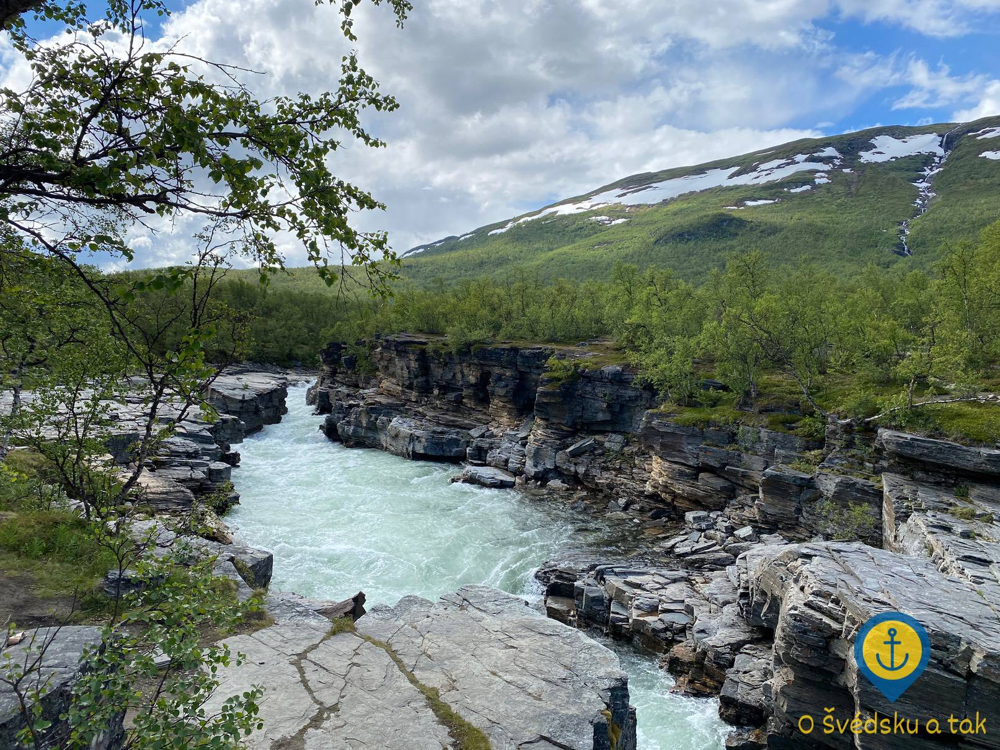
<em>Kaňon v Abisku podél Kungsleden</em></p>
<p>Vydáváme se po <em>Kungsleden</em> podél kaňonu a po zhruba 6 km odbočujeme doleva na neznačenou stezku. Doprovázení neustálým bzučením komárů si užíváme nádherné výhledy a pravou severskou divočinu bez téměř žádných turistů. Po dalších zhruba 4 km odbočujeme znovu doleva na další neznačenou stezku, která nás dovede až na sámské obětní místo <em>Paddus</em>. Chvíli se prodíráme lesem, než nalezneme vrcholovou knihu, kam se pyšně zapisujeme.</p>
<p>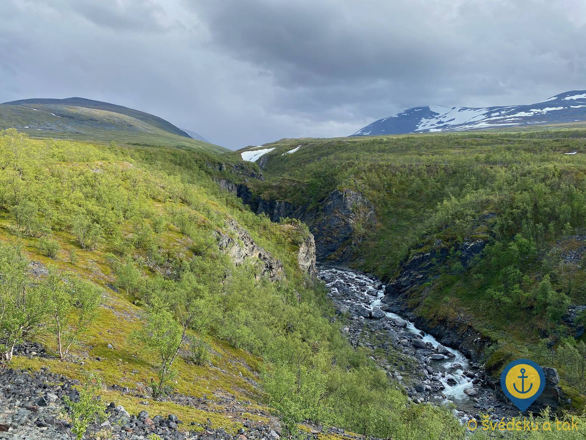
<em>Kaňon v Abisku podél neznačené stezky</em></p>
<p>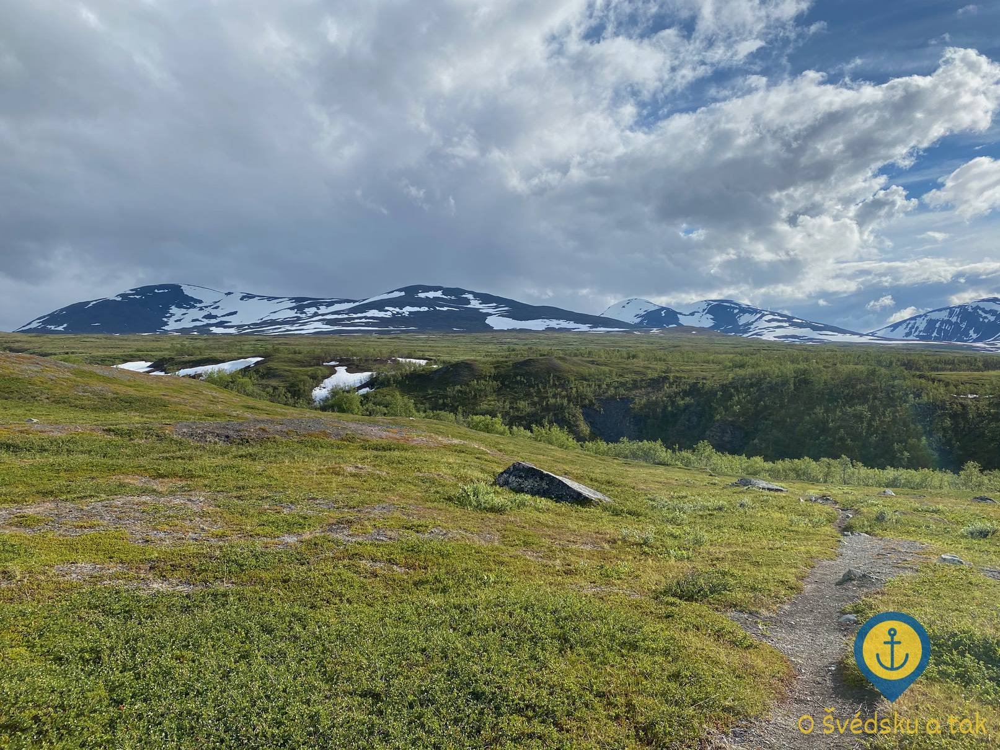
<em>Hory v Abisku</em></p>
<p>Odchod z <em>Paddusu</em> je zmatený a pořádně nevíme, kudy jít. Vtipkujeme na téma nutnosti nechat obětinu, abychom se mohli vrátit zpátky, a v tom se před námi znovu vyloupne pahorek s vrcholovou knihou. Pocit to je hodně mrazivý, ale napodruhé už správnou cestu trefujeme bez problémů a pokračujeme po modré značené stezce zpátky na parkoviště u informačního centra.</p>
<p>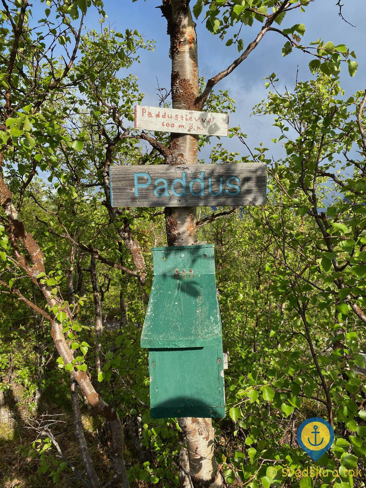
<em>Sámské obětní místo Paddus</em></p>
<p>Do auta přicházíme úplně zničení a hladoví, je po deváté večer a v nohou máme přes 21 km. Vzdáváme se myšlenky počkat zde na půlnoc a půlnoční slunce, protože je stejně pod mrakem, a vydáváme se zpět do campu. Do <em>Kiruny</em> přijíždíme po jedenácté večer a život nám zachraňuje <a href="https://www.facebook.com/midnattshornan.kiruna/">Pizzeria Midnattshörnan</a>, což je patrně jediné místo v celé <em>Kiruně</em>, kde lze sehnat v tuto pozdní hodinu jídlo.</p>
<h3>Haparanda</h3>
<p>Je neděle ráno a čeká nás cesta zpět po <strong>E45</strong>, balíme za příšerného deště. Celí promočení vzdáváme i snídani a nasedáme do auta s tím, že se najíme někde po cestě. To se nám nakonec daří v <a href="https://lappeasuando.com/restaurant/">Lappesuando Café</a>, kde si dáváme kafe a boží snídaňový sendvič. Po pauze pokračujeme v cestě, kousek před <em>Gällivare</em> sjíždíme na silnici <strong>E10</strong>, v <em>Töre</em> se napojujeme na <strong>E4</strong> a dostavuje se první splín - vždyť po téhle dálnici jezdíme <em>Stockholmem</em> skoro denně a vede téměř až k nám domů.
Cestou do <em>Haparandy</em> pršet nepřestává a provádíme náš první pokus navštívit věhlasné místní outlety. Je ovšem neděle, takže většina z nich je zavřená - navštěvujeme tak pouze <em>snus</em> outlet, který je pro Finy rájem na zemi, pro Švédy ovšem jen všedním obchodem se <em>snusem</em>.</p>
<p>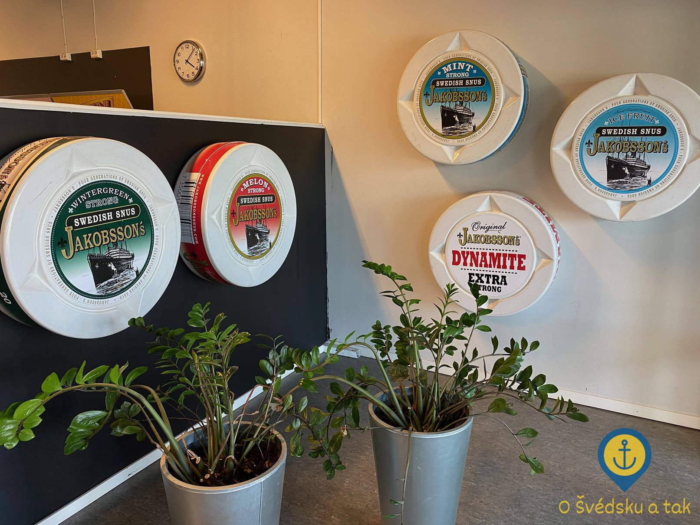
<em>Snus outlet v Haparandě</em></p>
<p><em>Haparanda</em> je město ležící přímo na švédsko-finské hranici. Jejím středem protéká řeka <em>Torneälven</em>, která město rozděluje na švédskou <em>Haparandu</em> a finské <em>Torneå</em>. Do Finska ale nemůžeme, tak se stavujeme alespoň na záchodě v nejsevernější IKEA na světě a dáváme si skvělou večeři v <a href="https://www.facebook.com/riverrestauranthaparanda/">River Restaurant</a>. Od stolu se smutně díváme na druhý břeh do Finska a je nám jasné, že se sem musíme vrátit, až budou hranice znovu otevřené.</p>
<p>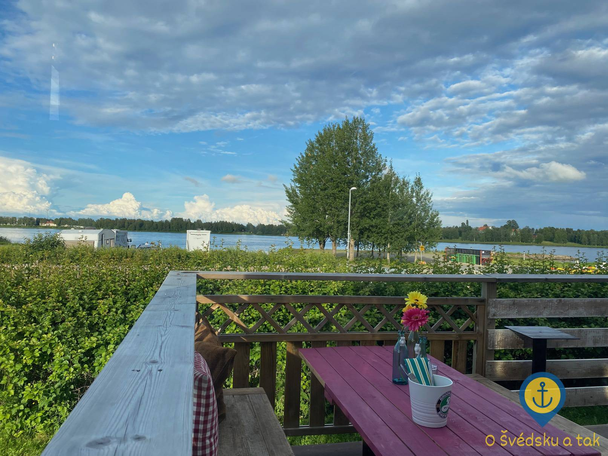
<em>Pohled z restaurace River Restaurant před řeku Torneälven do Finska</em></p>
<p>Noc trávíme v soukromém ubytování <a href="https://www.booking.com/hotel/se/varudden/">Vårudden</a> za <strong>550 SEK</strong>.</p>
<p>Déšť nebere konce, ale alespoň je pondělí a outlety jsou otevřené. Za skvělé ceny nakupujeme značkové outdoorové vybavení a máme z toho radost. Když je čas znovu vyrazit, jsou už téměř dvě hodiny odpoledne a stejně pořád prší, takže upouštíme od plánu navštívit vodopád u <a href="https://www.kukkolaforsen.se/">Kukkolaforsen</a>.
Vydáváme se na jih po silnici <strong>E4</strong> do města <em>Skellefteå</em>, cestou se stavujeme ještě v <em>Kalixu</em> na malý nákup a zjišťujeme, že v obchodech už zase převažuje městské vybavení. Achjo.<br>
Na oběd se stavujeme v motorestu <a href="https://www.kalix.nu/dagens-lunch/restaurang-roady/">Roady</a>, který je jednou z nejvyhlášenějších restaurací pro motoristy ve Švédsku. Dáváme si místní specialitu se sobím masem a uznáváme, že recenze nelhaly.</p>
<h3>Skellefteå</h3>
<p>Je úterý pozdě večer, když konečně přijíždíme do naší chatky ve <a href="https://fallforscamping.nu/">Fällfors Camping</a> a z campu jsme okamžitě nadšení - disponuje stejnou společenskou místností s otevřeným ohništěm jako camp v Kiruně, kromě toho se zde nachází celá řada dalších ohnišť venkovních. Rovněž je zde privátní sauna, kterou si lze zarezervovat, a před ní teče řeka, ve které se dá po sauně ochladit. Akorát dřevo se musí platit, jeden pytel stojí <strong>60 SEK</strong>.<br>
Grilujeme na ohni buřty k večeři a poté se vydáváme do sauny, kde trávíme příjemný večer. V campu se nám líbí opravdu hodně, takže se rozhodneme zde zůstat dvě noci a náš poslední den si užít v divočině v okolí <em>Skellefteå</em>. Za dvě noci v campu jsme zaplatili <strong>740 SEK</strong>.</p>
<p>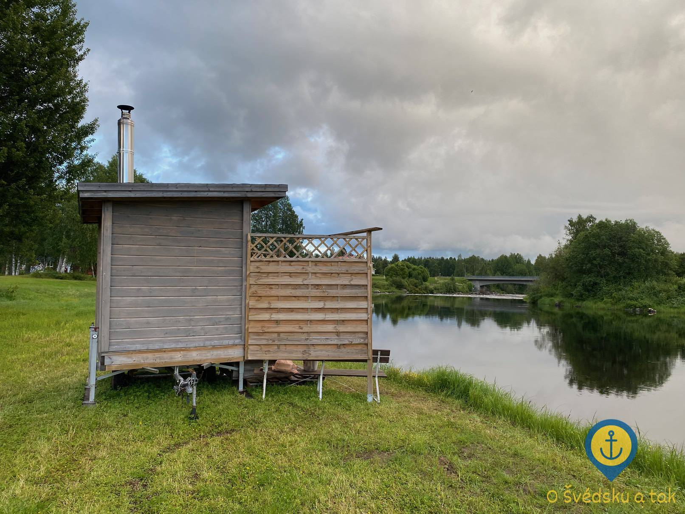
<em>Sauna u řeky v campu Fällfors Camping</em></p>
<p>Druhý den brzy ráno se vydáváme do informačního centra v <em>Skellefteå</em> - v okolí je řada nádherných stezek na túry a pídíme se po nějakém doporučení. Zajímají nás jako tradičně především okruhy, které jsou pro nás logisticky nejjednodušší kvůli autu. Jako první si vybíráme krátkou malebnou stezku v údolí řeky <em>Risån</em>.</p>
<p>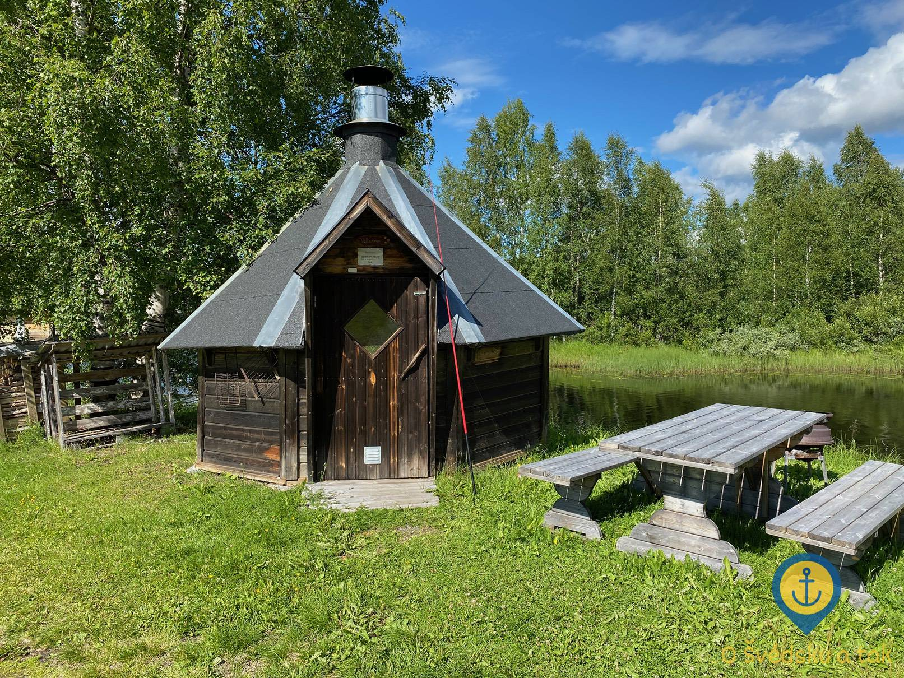
<em>Posezení na začátku Risåleden</em></p>
<p>Po příjezdu na parkoviště u <a href="https://www.skelleftea.se/Fritidskontoret/Innehallssidor/Bifogat/Risaleden_20160630_low.pdf">Risåleden</a> je čas na oběd, takže využíváme nádherného posezení u řeky k další grilovačce. Po chvíli ale začíná pršet a rozhodneme se přesunout do chaty s otevřeným ohništěm, která stojí hned vedle - akorát je nejprve třeba vybít komáry, kterých jsou vevnitř doslova mračna.<br>
Po jídle je přeháňka u konce a zase svítí sluníčko, tak vyrážíme na cestu. Stezka je oblíbená především kvůli starému dřevěnému mostíku přes řeku, který je opravdu velmi malebný a připadáme si jako v pohádce. Všude kolem jsou zelené louky plné lučního kvítí, nemohu odolat a pletu Terce věnec. </p>
<p>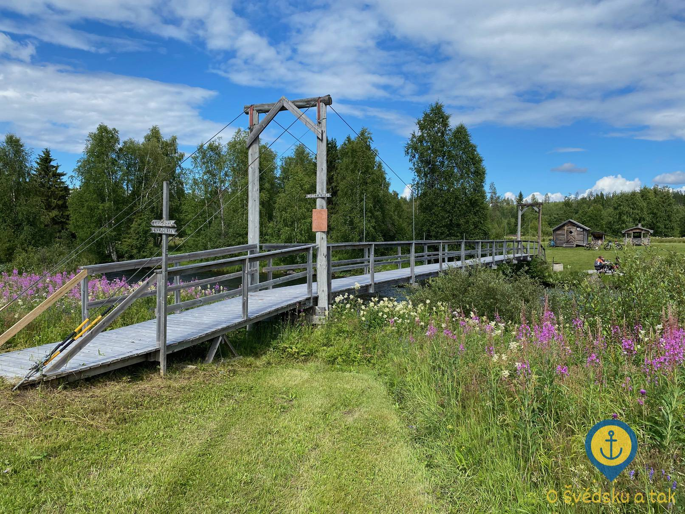
<em>Dřevěný mostík přes řeku Risån</em></p>
<p>Po 5 km procházce se rozhodujeme navštívit nedaleký <a href="https://www.skelleftea.se/Fritidskontoret/Innehallssidor/Bifogat/Kalvtrasklederna_20160630_low.pdf">Kalvträsk</a>, kde se nachází celá řada rozdílně dlouhých stezek a je opravdu z čeho vybírat. Vydáváme se na 9 km okruh, ale po pár kilometrech se tohoto plánu vzdáváme, po vydatných deštích je terén úplně podmáčený a chvílemi je schůdný jen opravdu hodně obtížně.</p>
<p>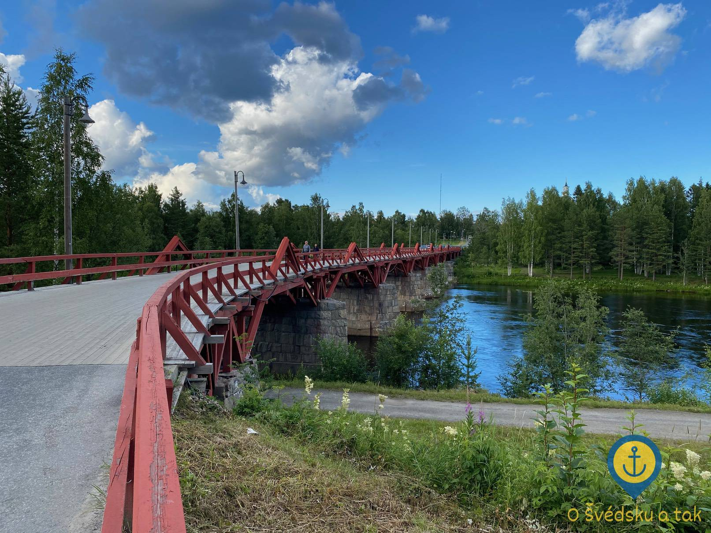
<em>Dřevěný most Lejonströmsbron</em></p>
<p>Jako náhradní plán volíme prohlídku starého města v <em>Skellefteå</em> - starý dřevěný most <em>Lejonströmsbron</em>, po kterém je povolená jednosměrná autodoprava (řízená semaforem) a kostelní městečko <em>Bonnstan</em>, které v historii sloužilo pro ubytování návštěvníků nedalekého kostela.<br>
Ve středověkém Švédsku platila povinnost navštěvovat kostely pravidelně, přičemž frekvence těchto návštěv se řídila tím, jak daleko jste měli nejbližší kostel od místa svého bydliště. Pokud jste bydleli do deseti kilometrů od kostela, museli jste jej navštěvovat každou neděli, pokud do dvaceti, tak každou druhou neděli a tak dále. V kostelních městečkách tak bydleli jednak lidé, kteří to chtěli mít do kostela blízko a stejně tak i lidé, kteří přijeli zdaleka a chtěli zde přenocovat před zpáteční cestou.</p>
<p>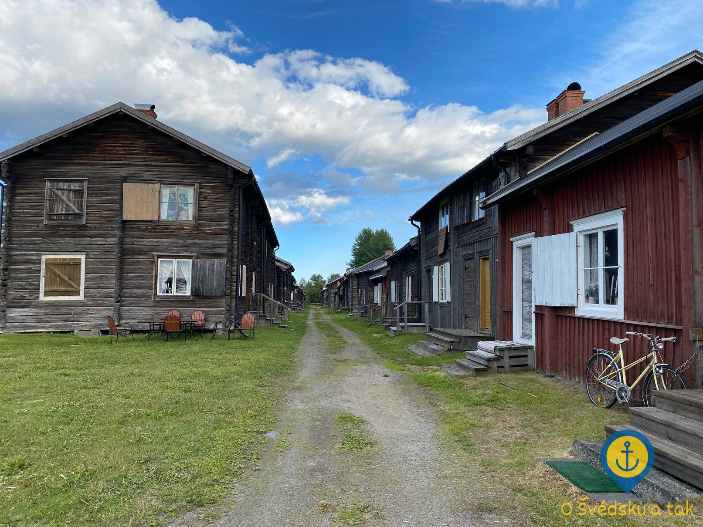
<em>Dřevěné kostelní městečko Bonnstan</em></p>
<p><em>Bonnstan</em> je staré dřevěné městečko, kde na vás dýchá kus historie - je to jako byste stáli ve skansenu, a přitom stojíte v reálné čtvrti, kde dodnes žijí lidé. Všechny domy mají renovovaná kamna a komíny, jinak jsou zcela původní. Také zde z pochopitelných důvodů platí kompletní zákaz rozdělávání ohňů a používání grilů.</p>
<h3>Sundsvall</h3>
<p>Ve středu ráno, téměř po dvou týdnech od doby, co jsme vyrazili, se vydáváme do naší poslední zastávky v okolí města <em>Sundsvall</em>. Jedeme po <strong>E4</strong> dál na jih a začíná na nás plně doléhat tíha blížícího se konce dovolené. Na oběd se stavujeme v restauraci <a href="http://trafikantenibygdea.se/restaurang.html">Trafikanten</a> kousek za městem <em>Umeå</em>.</p>
<p>Po cestě se chceme stavit do národního parku <a href="http://www.sverigesnationalparker.se/skuleskogen">Skuleskogen</a>, ale když přijíždíme na přeplněné parkoviště a vidíme davy lidí, přechází nás chuť a tento plán odkládáme na jindy - <em>Sundsvall</em> je jen 4 hodiny jízdy autem od <em>Stockholmu</em> a není problém se sem stavit kdykoliv později na víkend. </p>
<p>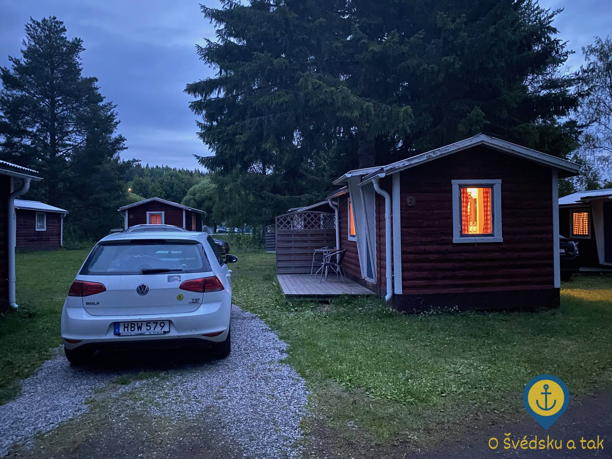
<em>Naše auto a chatka ve Stöde Camping</em></p>
<p>Jedeme dál na <em>Sundsvall</em> a doprava značně houstne - pojímáme podezření, že polovina Švédska sice možná tráví dovolenou někde na jihu, jak pořád tvrdí noviny, ale ten zbytek je tady a v <em>Åre</em>. Město samotné je obrovské a je to největší město na celé naší cestě. Po dvou týdnech prakticky v divočině nemáme o městské zážitky zájem, rychle utíkáme pryč a volíme další camp v lese - <a href="http://www.stodecamping.com/">Stöde Camping</a>. Naši poslední noc dovolené zde trávíme za <strong>400 SEK</strong> a jsme příjemně překvapení, že zde nejsou téměř žádní komáři.</p>
<p>Druhý den ráno naposledy smutně balíme všechny naše věci do auta a vracíme se na <strong>E4</strong>. Velmi hustá doprava dává tušit, co nás čeká ve <em>Stockholmu</em> a je to zároveň i jakási předzvěst návratu do reality. Jsme v tu chvíli hrozně rádi, že se vracíme zpátky na náš malý ostrov a ne do bytu v centru města, protože takový návrat by byl dvojnásobně krutý. </p>
<p>Po cestě si dáváme ještě malou odbočku do přírodní rezervace <a href="https://www.lansstyrelsen.se/gavleborg/besoksmal/naturreservat/alsjon.html">Ålsjön</a>, kde si u jezera vaříme náš poslední dovolenkový oběd na vařiči. </p>
<p>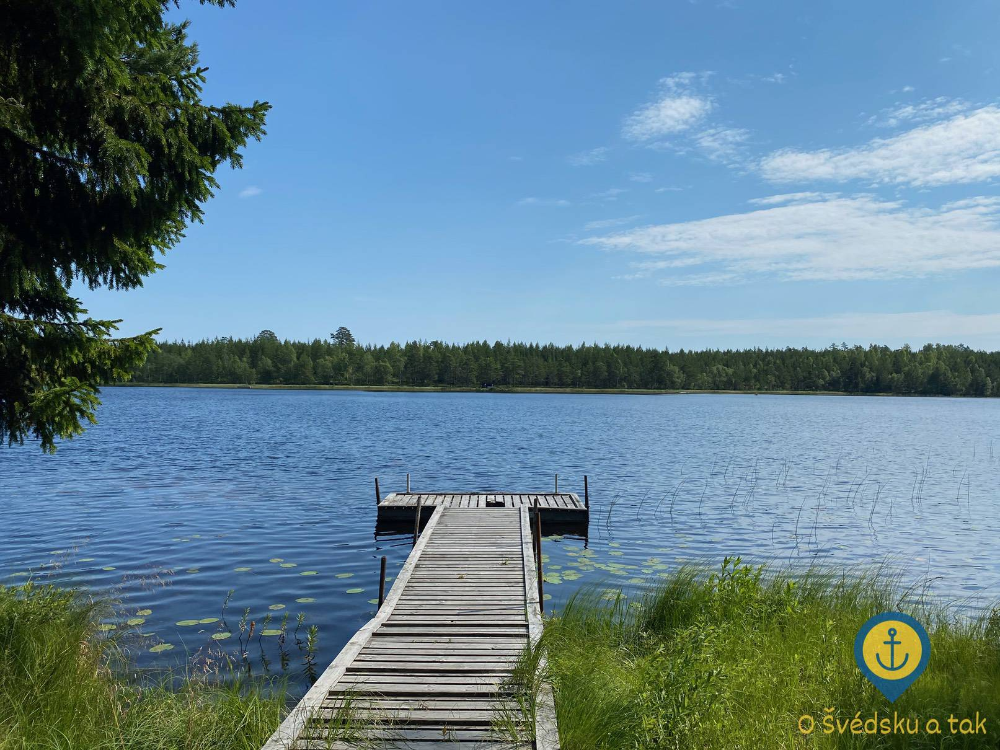
<em>Jezero Ålsjön</em></p>
<p>V <em>Gävle</em> jsme se původně chtěli stavit ještě na prohlídku whisky destilérky <a href="https://mackmyra.se/">Mackmyra</a>, ale plán nakonec vzdáváme ze stejného důvodu jako okolí <em>Sundsvallu</em> - je to sem kousek a můžeme sem zajet kdykoliv.</p>
<p>Průjezd <em>Stockholmem</em> je nad očekávání klidný a nikde nepotkáváme žádné kolony tak, jak jsme zvyklí. V šest ráno jsme odtud před dvěma týdny vyjížděli a teď se přívozem v šest večer vracíme zpátky domů na náš ostrov <em>Tynningö</em>, bohatší o několik nádherných zážitků a zkušeností.</p>
  </div>
  <div class="tag-cloud">
    <p>
      <a href="https://svedsko.blog/tag/narodni-park.html">národní park</a>
      <a href="https://svedsko.blog/tag/priroda.html">příroda</a>
      <a href="https://svedsko.blog/tag/svedsko.html">Švédsko</a>
      <a href="https://svedsko.blog/tag/turistika.html">turistika</a>
      <a href="https://svedsko.blog/tag/road-trip.html">road trip</a>
      <a href="https://svedsko.blog/tag/cestovani.html">cestování</a>
      <a href="https://svedsko.blog/tag/are.html">Åre</a>
      <a href="https://svedsko.blog/tag/pieljekaise.html">Pieljekaise</a>
      <a href="https://svedsko.blog/tag/abisko.html">Abisko</a>
      <a href="https://svedsko.blog/tag/kiruna.html">Kiruna</a>
      <a href="https://svedsko.blog/tag/polarni-kruh.html">polární kruh</a>
      <a href="https://svedsko.blog/tag/sever.html">sever</a>
    </p>
  </div>


<div id="disqus_thread"></div>
<script type="text/javascript">
    var disqus_shortname = 'ivadol';
    (function() {
        var dsq = document.createElement('script'); dsq.type = 'text/javascript'; dsq.async = true;
        dsq.src = '//' + disqus_shortname + '.disqus.com/embed.js';
        (document.getElementsByTagName('head')[0] || document.getElementsByTagName('body')[0]).appendChild(dsq);
    })();
</script>
<noscript>
    Pro zobrazení komenářů prosím povolte JavaScript.
</noscript>
</article>

    <footer>
<p>
  &copy; Knut Holm 2017-2020 &#8226; Obsah je chráněn licencí <a rel="license" href="https://creativecommons.org/licenses/by-sa/4.0/deed.cs" target="_blank">CC BY-SA 4.0</a>
</p>
<p>
</p>    </footer>
  </main>

<!-- Google Analytics -->
<script type="text/javascript">
  (function(i,s,o,g,r,a,m){i['GoogleAnalyticsObject']=r;i[r]=i[r]||function(){
  (i[r].q=i[r].q||[]).push(arguments)},i[r].l=1*new Date();a=s.createElement(o),
  m=s.getElementsByTagName(o)[0];a.async=1;a.src=g;m.parentNode.insertBefore(a,m)
  })(window,document,'script','//www.google-analytics.com/analytics.js','ga');

  ga('create', 'UA-110306205-1', 'auto');
  ga('send', 'pageview');
</script>
<!-- End Google Analytics -->


<script type="application/ld+json">
{
  "@context" : "http://schema.org",
  "@type" : "Blog",
  "name": " O Švédsku a tak ",
  "url" : "https://svedsko.blog",
  "image": "https://svedsko.blog/images/author.jpg",
  "description": "Knut Holm píše blog (nejen) o svém odchodu do Švédska"
}
</script>
</body>
</html>